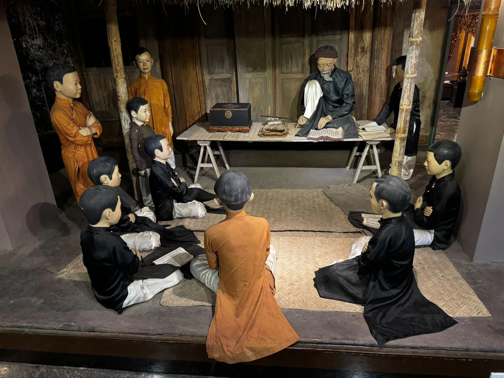
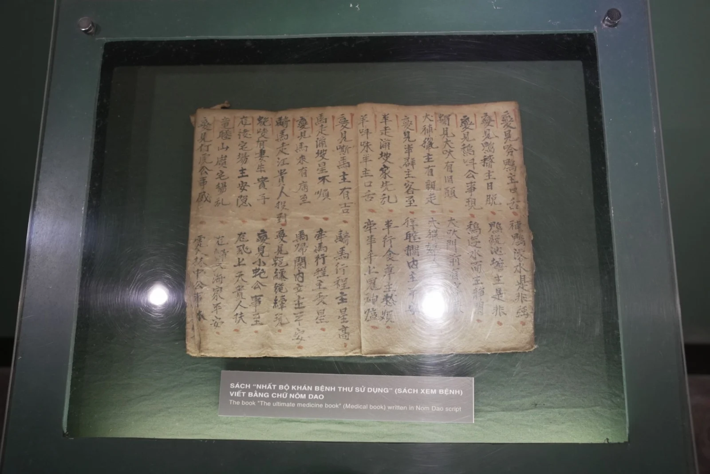

Trong bài
Tại Bảo tàng Văn học Việt Nam, mô hình dạy học thời phong kiến tái hiện sinh động nếp học Nho học và con đường khoa cử từng giữ vai trò quan trọng trong đời sống xã hội. Qua đó, người xem có dịp tìm hiểu cách người xưa học chữ, rèn luyện đạo đức và nuôi dưỡng khát vọng lập thân bằng tri thức.
Mô hình lớp học thời phong kiến: Bức tranh sinh động về trường học xưa
Bước vào không gian trưng bày, người xem sẽ thấy một lớp học truyền thống. Thầy đồ ngồi trên chiếc phản gỗ, trước mặt đặt sách vở và những vật dụng phục vụ việc dạy học. Xung quanh, các học trò ngồi trên chiếu đan, hướng về phía thầy, chăm chú theo dõi bài giảng. Trang phục áo dài truyền thống, mái nhà, cột gỗ và những vật dụng mộc mạc góp phần tái hiện không khí của một lớp học xưa.

Mô hình cũng giúp người xem hình dung rõ hơn mối quan hệ giữa thầy và trò trong nền giáo dục truyền thống. Người thầy không chỉ truyền đạt kiến thức mà còn hướng dẫn học trò tu dưỡng đạo đức, rèn cách ứng xử và hình thành nhân cách. Trong quan niệm Nho học, việc học vì thế không đơn thuần là tiếp thu chữ nghĩa, mà còn gắn với quá trình sửa mình và thực hành những chuẩn mực đạo đức được đề cao trong xã hội.
Hệ thống giáo dục và khoa cử dựa trên Nho học đã tồn tại ở Việt Nam gần 1000 năm, từ năm 1075, dưới triều vua Lý Nhân Tông cho đến năm 1919 đời vua Khải Định nhà Nguyễn mới chấm dứt. Khoảng thời gian đó đã là một định chế bình đẳng cho mọi nhân tài có cơ hội thăng tiến trên đường hoan lộ, cũng như đã đào tạo được một tầng lớp sĩ phu có khí tiết và đức độ rất có uy tín trong dân gian.
Từ tuổi vỡ lòng đến kinh sử
Việc học hành ngày xưa được bắt đầu từ lúc đứa trẻ khoảng 6, 7 tuổi, được gọi là giai đoạn sơ học. Đây là giai đoạn làm quen với chữ nghĩa, ghi nhớ những văn bản nhập môn và rèn luyện những kỹ năng cơ bản để tiếp tục học lên cao.
Tài liệu học tập được giới thiệu gồm Tam tự kinh, Tứ tự kinh, Ngũ ngôn cùng những bài tập làm văn, câu đối hai chữ. Khi đã có nền tảng ban đầu, học trò tiếp tục tiếp cận những nội dung khó hơn. Khoảng 10 tuổi trở lên, các em được học Ngũ kinh, lịch sử Trung Hoa, lịch sử Việt Nam và tập làm những bài văn, câu đối dài hơn, có cấu trúc bảy hoặc tám chữ.

Những người học giỏi có thể được lựa chọn cho về kinh học tại Quốc Tử Giám, cùng với con em hoàng tộc, con của các quan lại và một số đối tượng được tuyển nhận theo quy định của từng thời kỳ. Đây là môi trường đào tạo quan trọng của nền giáo dục Nho học, gắn với việc bồi dưỡng nhân tài và chuẩn bị
Mô hình dạy học thời phong kiến tại Bảo tàng Văn học Việt Nam đã mở ra góc nhìn trực quan về nền giáo dục Nho học, quá trình học tập của học trò xưa và vai trò của khoa cử trong lịch sử dân tộc. Qua không gian lớp học được tái hiện, người xem có thêm cơ hội tìm hiểu di sản giáo dục, văn hóa và văn học Việt Nam, đồng thời cảm nhận rõ hơn truyền thống hiếu học đã được gìn giữ qua nhiều thế hệ.
Bảo tàng Văn học Việt Nam